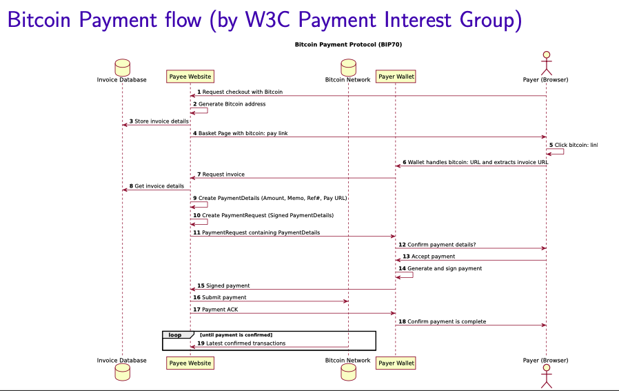

Blockchain¶
links: AC1 TOC - Blockchain - Index
What is a blockchain?¶
A blockchain is a distributed ledger which stores data in a series of blocks. Blocks contain lists of transactions and the hash of the previous block. Adding the hash of the previous block links every block to the next which leads to the formation of a chain. Altering data in a older block becomes more difficult over time because the hashes in all the following blocks have to be altered as well.
Advertised properties of blockchain¶
Buzzwords:
- Immutability
- Transparency
- Anonymity
- Decentralization
- Irreversibility
- Autonomy
Immutability¶
Claim
When something is written to the blockchain it can not be altered anymore and stays there forever.
Reality
Given sufficient computing power an attacker can gain more mining power than the rest of the network. This allows them to change data inside a block and then recalculate the following blocks.
It's possible to simply start an additional blockchain or fork the initial blockchain and change / remove transactions.
It's possible that the network partitions for some time and then merges again. Depending on the protocol this either breaks consensus and some central power has to step in and fix the problem or the longer chain is chosen as the valid one which leads to transactions in the shorter chain getting lost.
Transparency¶
Claim
All transactions are publicly available. Every participant in the network can verify that the protocol is followed and there are no malicious transactions (for example double spending).
Reality
While all transactions are public, there is no personal data required to make a transaction on a blockchain. Every wallet (available money to spend) is represented as a public key (pseudonym) and for an outsider there is nothing to learn from single transactions.
Anonymity¶
Claim
Anonymity can be achieved with some wallets (changing public key after every transaction) and pseudonymity is always "given" since no personal information has to be given to anyone to use a blockchain.
Reality
The most common way to buy cryptocurrency (interacting with a blockchain) is over an exchange which requires kyc (know your customer). The exchange sends the money to your wallet (public key) which essentially links your personal information to your public key. The same is the case when using the money to buy something on the internet. Normally personal information has to be given to buy something on the internet.
There are ways to mitigate those issues but it is up to the protocol to decide if those are required or not. For example monero has privacy and anonymity baked into the protocol. This can lead to other issues though. In the case of monero no one can verify that there is no inflation bug in the protocol since no one knows who has how much money.
Decentralization¶
Claim
Anyone can run a bitcoin node, anyone can mine bitcoin and everyone can see the blockchain and verify that everything is correct. It is believed / hoped that no single actor can gain power over the network and alter / stop / remove transactions. Decentralization is important because it eliminates the need to trust a central authority. The blockchain is supposed to run trustlessly
Reality
In reality blockchains often have a tendency to become more centralized. Places with cheaper energy and less regulation can mine cryptocurrencies cheaply which can lead to mining centralization. Miners are built by companies which gives those companies power. Early adopters of currencies might have a big amount of the currency which allows them to affect the price and in the case of proof of stake have a bigger voting power for new blocks and higher staking rewards.
Irreversibility¶
Claim
Once a transaction is on the blockchain it cannot be undone.
Reality
See Immutability
Autonomy¶
Claim
Every user owns his own money and can send it to anyone else without being censored by a central power (bank or government).
Reality
While the claims can be true there are problems that come with it. Users need to self custody their money which is similar to having money under the mattress. A user error leads to lost funds and no way to recover them (hackers, losing private key, security bug in wallet / protocol). Those properties lead users to store their funds on central exchanges. Since there is not much regulation currently when it comes to internet money, those exchanges can not always (never) be trusted.
What is proof of work / mining?¶
Proof of work (POW) is what a miner does to append a block to the blockchain. User transactions are propagated through the network and end up in the mempool (memory pool) of the nodes. Mempool is just a list of pending transactions. A miner (node) then takes some transactions and puts them in a block and adds the hash of the previous block. The miner has to make sure that the chosen transactions are valid (no double spending and user must have enough available funds). A miner has to have all the balances from all users in the network loaded in memory to be able to verify new transactions in reasonable time. This means that every miner initially has to parse the whole blockchain (around 500GB for bitcoin) and load the current balances of all the users.
Mining means adding a random string to the block and hashing the block until some goal is reached. Normally the goal is to find a hash which has a number of leading 0's (finding a partial collision). The number of the leading 0's is the difficulty. The difficulty can be adjusted based on the computing power of the network (how long it takes on average to find a new block). This happens automatically based on the rules in the protocol.
When a miner finds a block he propagates it through the network. Every miner/node reads the random string from the block, hashes the block and confirms that the resulting hash has enough leading 0's to reach the difficulty goal. If that's the case they remove those transactions from their mempool, add the block to their local copy of the blockchain (ledger) and continue mining.
Mining is usually done with ASICs (application-specific integrated circuit) to get the most out of the available power. Mining on CPU / GPU is possible but normally not economically viable.
What is proof of stake?¶
Instead of mining users can lock up their money and put it "at stake". Users that are staking are randomly chosen to "mine" the next block. This solution uses less energy because no mining is happening but it's debatable if it's as secure as mining. Users with a lot of money can have more influence over the network and they get more money over time because they still get the rewards for every block they mine.
Why is mining / staking necessary?¶
It's to avoid sybil attacks. If there was no requirement to mine a block an attacker could deploy multiple nodes and have a higher chance to mine blocks. Mining / staking ensures that this is not possible.
What is bitcoin?¶
The most popular implementation of blockchain internet money / cryptocurrency is bitcoin. Every user has at least one public / private key pair. Money can be sent to other users public keys and private keys are used to sign transactions.
Bitcoins are created (minted) when a block in mined. A miner can add a transaction in the block which essentially creates some bitcoin (6.25 currently) out of nothing and give it to himself. This is called the block reward. Regular users have to provide transaction fees when doing a transaction. The miner can add those fees to his own address as well.
Normal block time is 10 minutes. This means that the protocol tries to adjust the difficulty so that around every 10 minutes a miner finds a block. If too many blocks are found the difficulty is increased which means miners have to find hashes with more leading 0's.
Bitcoin has a maximum available supply of 21 million. Every ~4 years the block reward is cut in half. This means that to keep miners incentivised to mine the price of bitcoin needs to double every 4 years. If that is not the case then some miners will not be profitable anymore and might have to stop mining. This leads to less security for the network. In the year 2140 all 21 million bitcoin will be mined. It is not yet clear what is going to happen at this point. The current idea is that the block rewards will be replaced by transaction fees.

What are problems of bitcoin?¶
Conflicting blocks
It's possible that two miners mine a block at the same time. This means that one partition of the network has has Block A as latest block and the other partition has Block B as latest block. This problem is easily solved by the fact that bitcoins protocol always chooses the longest chain. If a miner which has Block A as latest block mines Block C then all nodes which have Block B as latest block will notice that they are not part of the longest chain anymore and will have to either resync with the rest of the network or fork.
Forking
Forking means that one or more nodes decide to mine their own blockchain independently from the rest of the network. This allows them to change the history of the blockchain, remove parts of the blockchain or change the protocol entirely. In the case of a protocol change, the history of the blockchain stays the same. This means that users who had money on the old blockchain will have the same amount on the new blockchain and will be able to spend the money on both blockchains.
The most prominent fork is the bitcoin fork of 2016 which lead to the creation of bitcoin cash. For bitcoin nothing really changed through this fork. Some people sold off their bitcoin because they believe bitcoin cash is the real bitcoin but most users sold their newly forked bitcoin cash and kept their bitcoin which lead to bitcoin cash being orders of magnitude less valuable than bitcoin.
Finality / Latency
Because of the double spending problems it is recommended to wait around 6 blocks until a transaction is confirmed. Reversing a transaction after only 1 block is easier than reversing it after 6 additional blocks have already been mined. An attacker would need to change the transaction and then shadow mine (mine locally without broadcasting) all the previous blocks and catch up with the longest chain. An attacker needs at least 51% of the mining power to achieve this attack but the older the transaction the more mining power is needed to catch up with the current state of the chain in a reasonable time. For every shadow mined block the actual block chain has a 49% chance to also find a block which means the attacker need to shadow mine even more.
Compared to mastercard the waiting time for finality isn't too bad. On Mastercard settlement only happens after 1-2 business days and even after that a chargeback can still be made weeks or months after the transaction happened.
Privacy
Transactions are only private as long as your personal information are not linked to your public key. All transactions are transparent and public available.
Storage
The bitcoin blockchain grows linearly over time. It's currently around 500GB and there is no garbage collection. Spent transactions are only used for parsing the blockchain and for nodes to verify themselves that every transaction that ever happened is valid. Removing part of the blockchain would theoretically add trust because new nodes will have to trust that previous transactions were valid. This is an open discussion and the blockchain can be pruned (remove old transactions) in the future if consensus can be reached.
Power consumption
Mining takes up a lot of energy. The spent energy can be considered as wasted. If bitcoin has actual value or not is a debatable topic and the amount of energy spent on creating it is linked to this discussion. It is believed that mining uses as much energy as Denmark today. There is no way to actually verify this claim.
Rate
The bitcoin network supports around 7 transactions per second which is very little. This leads to high transactions fees. Other solutions like the lightning network or central exchanges help with this problem but they lead to less security (lightning network) or less decentralization / more trust (central exchanges) -> blockchain trilemma
Accountability
Because personal information is not linked to bitcoin public keys it used to be used for criminal activity. Because of the pseudonymity it is not the best solution since the police can still find bad actors if they can link the public key to a person in any way (buying bitcoin on exchange or spending it). Solutions like monero are better suited for criminal activity.
What are altcoins¶
Altcoins are cryptocurrencies which are not bitcoin.
Dogecoin
Memecoin which essentially works like bitcoin, only slight protocol changes
Zcash
Uses ZKSNARKs (Zero-Knowledge Succinct Non-Interactive Argument of Knowledge) to hide transactions
Ethereum
Allows users to deploy smart contracts (programs) on the blockchain which miners will execute in decentralized way. Allows the creation of additional altcoins on top of ethereum.
Case study¶
“A company is developing new software for private payments. This will enable its customers to transact with “complete” privacy (like cash). The solution does not include backdoors, and thus the company cannot block payments to support trade embargos or anti money laundering efforts.”
Virtues¶
Privacy
Users can transact money privately
Autonomy
Users can do whatever they want with their money and no one can stop them
Inclusivity
Users who might not had a bank account before get to use money on the internet which might not have been possible previously
Vices¶
Illicit activities
Users can use this system to do illegal activities like money laundering or tax evasion
Lack of consumer protection
Reversing fraudulent transactions is not possible if everything is private
Regulatory compliance
Anti-money laundering efforts can not be supported which might make this system illegal in some parts of the world
links: AC1 TOC - Blockchain - Index